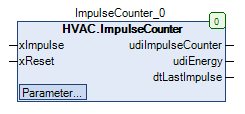

ImpulseCounter (FB)¶
FUNCTION_BLOCK ImpulseCounter
Short Description¶
Counter for input impulses with reset input and adjustable reduction
Portrayal¶

Interfaces¶
Inputs¶
Name Datatyp
Range
Initial value
Function
xImpulse BOOL Counter input
Reset stopwatch
BOOL FALSE Reset input
Output¶
Name Datatyp
Range
Initial value
Function
udiImpulseCounter UDINT Impulse counter
udiEnergy UDINT Impulse counter after reduction
dtLastImpulse DATE_AND_TIME Date/time of the end of the latest count impulse
Setpoints / Parameter¶
Name Datatyp
Range
Initial value
Function
udiEnergyFactor UDINT 1 Reduction factor
Functional Description¶
General¶
This function block is used to count the impulses (= rising edges) at the counter input xImpulse within of the technical limits.
The counter is displayed at the output udiImpulseCounter.
If the counter reading udiImpulseCounter exceeds / reaches the limit value udiEnergyFactor, the output udiEnergy is incremented.
The output udiImpulseCounter is then reset to 0.
The outputs udiImpulseCounter and udiEnergy are reset to 0 as long as an rising edge is detected at input xReset.
At the output dtLastImpulse, the current date/time is available after each rising edge at input xImpulse.
At the output dtLastImpulse for all other states at input xImpulse, the date/time at the end of the last rising edge is available.
Before the first rising edge is triggerd, the output dtLastImpulse shows the initialization value DT#1970-1-1-1-0.0.0.
Value ranges of the outputs udiImpulseCounter and udiEnergy
Valid meter counts are within the limits 0 and 4294967295.
The incrementing of the counter value 4294967295 resets the counter value to 0.
The counter value is then incremented again continuously.
Reduction factor udiEnergyFactor
The reduction factor udiEnergyFactor is overwritten with the value 1 it the value is set to 0.
Example - Reduction factor
udiImpulseCounter = 9, udiEnergy = 0, udiEnergyFactor = 10
After a rising edge at input xImpulse, the counter readings change as follows:
udiImpulseCounter = 0, udiEnergy = 1, udiEnergyFactor = 10
Visualization¶
Codesys¶
- InOut:
Scope Name Type Initial Comment Input xImpulse BOOL Counter input
xReset BOOL FALSE Reset input
udiEnergyFactor UDINT Reduction factor
Output udiImpulseCounter UDINT Impulse counter
udiEnergy UDINT Impulse counter after reduction
dtLastImpulse DT Date/time of the end of the latest count impulse